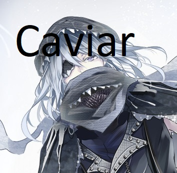
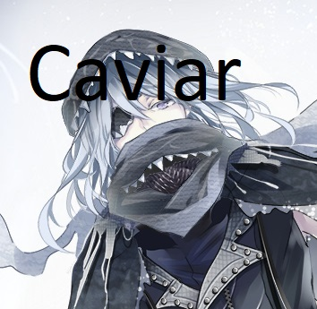

Caviar
C.V. Jeff Schine
Pouvoirs et abilités
Type : Défense : Les Food souls de type défense sont en ligne de front et encaissent
les coups reçus par les ennemis. Il est important d'avoir un bon tank, car ils sont la première ligne de défense pour
les autres Food Souls.
- Combat
- Shadow's Cruel Bite : Caviar appel un banc de poisson pour se défendre et augmente sa défense de 36 points et
réduit la défense de ses ennemis de 15%.
- Void Depths : Caviar ferme les yeux et appellent d'autre poisson avec l'aide de Milt. Il récupère 10% de PV pendant
10 secondes et devient invincible pendant 5 secondes.
- Void Ocean : Caviar récupère 21 PV par seconde pendant 10 secondes et devient invincible pendant 3 secondes.
Statistques Prioritaires
- HP
- Déf
- Attaque critique
- Critique

 
